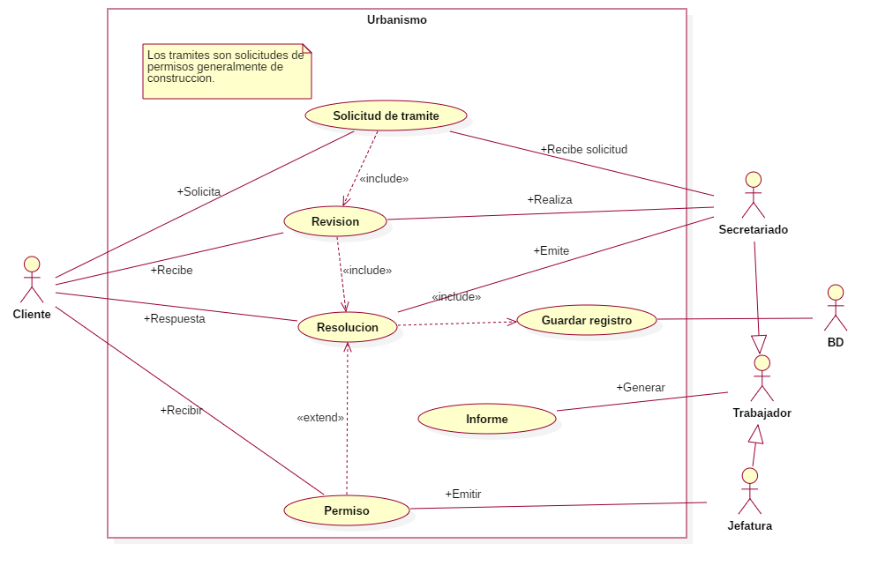
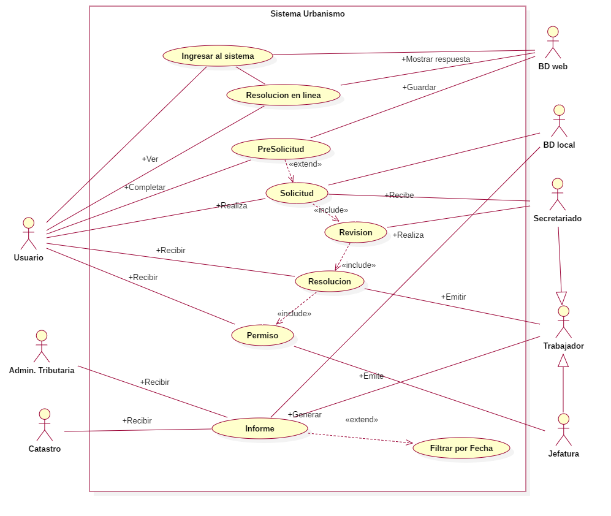

Diagramas
Diagrama General

Diagrama Específico

Explicación
Actores
| Actor | Papel que juega |
|---|---|
| Usuario | Persona que realizará las solicitudes de trámites y podrá entrar en el sistema web |
| Administración tributaria | Area perteneciente a la alcaldía de Masaya. |
| Catastro | Area perteneciente a la alcaldía de Masaya. |
| Secretariado | Secretario del departamento del area de urbanismo de la alcaldía de Masaya. |
| Trabajador | |
| Jefatura | Jefes del area de urbanismo de la alcaldia de Masaya |
| BD Web | Base de datos de sistema web, implementada junto con el sistema web requerido. |
| BD Local | Base de datos de sistema de escritorio, que almacena información de los tramites una vez que se da permiso al Usuario. |
Nomenclatura
| Columna | Descripción |
|---|---|
| Actores | Actores que se involucran en el caso de uso. |
| Caso de uso | Caso de uso en el que se involucran, los actores. |
| Explicación | Explicación de como se involucran los actores en el caso de uso. |
Significado de casos de usos
Se presenta una explicación de los casos de usos por parte de los actores y de un caso de uso en concreto. Nos enfocaremos detalladamente en el Diagrama Específico
| Actores | Caso de Uso | Explicación |
|---|---|---|
| Usuario, BD Web | Ingresa al Sistema | El Usuario hace una petición para poder entrar al sistema web |
| Usuario, BD Web | Resolucion en linea | La BD Web muestra las resoluciones de los tramites al Usuario |
| Usuario, BD Web | PreSolicitud | La BD Web guarda los datos de las PreSolicitud realizada por el Usuario |
| Usuario, BD Local, Secretario | Solicitud | La BD Local guarda las solicitudes por tarde del Usuario, luego el Secretariado recibe la Solicitud |
| Secretariado | Revision | El Secretariado hace una Revision sobre los datos de la Solicitud |
| Usuario, Trabajador | Resolucion | El Trabajador emite una resolución de la solicitud realizada por el Usuario. |
| Usuario, Jefatura | Permiso | La Jefatura emite un permiso al Usuario. |
| Administración tributaria, Catastro, BD Local, Trabajador | Informe | BD Local y el Trabajador emiten los informes que reciben Administración tributaria y Catastro. |